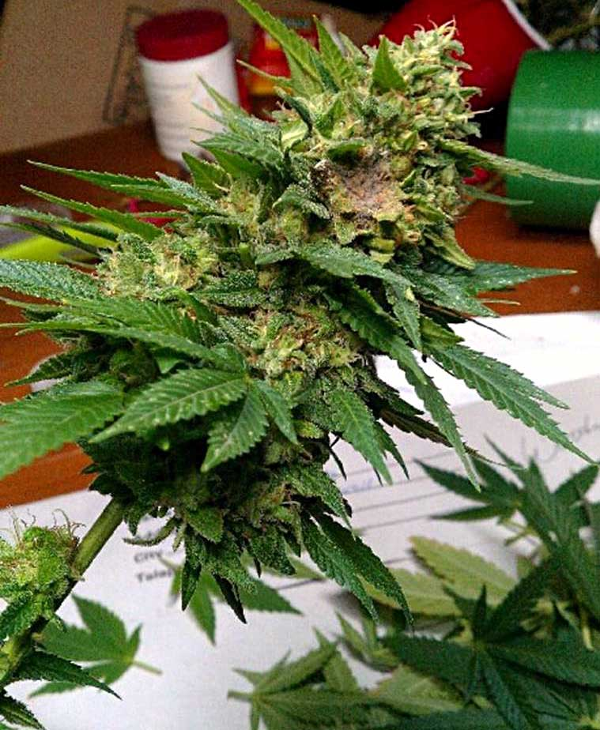

Pest Treatment
Common pests encountered while growing organic cannabis and various strategies for eliminating them.
Refresh page to go back.| Pest Index | ||||
|---|---|---|---|---|
| Type | Pest | Picture | Description | Treatment |
| Insects | Aphids |  |
Very small, can be many colours, may have wings, oval shaped, can be found anywhere on the plant. |
|
| Mites |  |
Too small to see without magnification, use symptoms as a guide: droopy twisted leaves, curled leaf edges, twisted new growth, web (spider mites), yellowing or dead spots. Symptoms should be concentrated in specific areas. |
|
|
| Hard Bodied Insects |  |
Typically larger insects that consume large amounts of plant stem or foliage. |
|
|
| Flying Insects |  |
Small gnats or flies found around and on the underside of foliage. |
|
|
| Mold/Fungus | Powdery Mildew |  |
White powdery substance on the surface of the plant. |
|
| Botryitis |  | Dark brown/gray dead spots found inside flower. |
|
|
| Viruses | Tobacco Mosaic Virus | Symptoms include twisted and stunted growth, curled leaf tips, yellow spots or specks on unhealthy leaves, a lack of cannabinoid and terpene production. Found all over the plant. |
|
|